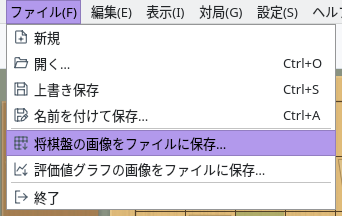
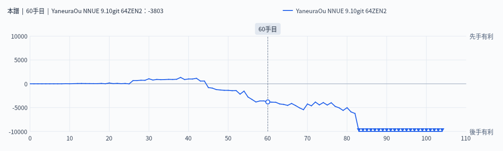

盤面や評価値グラフを画像として保存・コピー
盤面と評価値グラフを、画面に表示されているとおりの画像にします
「ファイル」→「将棋盤の画像をファイルに保存…」または「評価値グラフの画像をファイルに保存…」で画像をファイルに保存します。保存先を選ぶ画面ではファイルの種類（PNG・JPEG・WebP・BMP・TIFF など。使える形式は環境によって異なります）を選べます。最初はピクチャフォルダに「ShogiBoard_日付_時刻.png」（評価値グラフは「EvalGraph_日付_時刻.png」）という名前が入っています。
ファイルにせずに文書や画像編集ソフトへ貼り付けたいときは、「編集」→「将棋盤画像コピー」または「評価値グラフ画像コピー」でクリップボードにコピーします。コピーされる画像は、ファイルに保存する画像と同じです。

「ファイル」メニュー：画像を保存する項目
形勢の推移をグラフの画像として保存します
評価値グラフ画像は、「評価値グラフ」タブのグラフをそのままの大きさで画像にします。対局中のエンジンの評価値や棋譜解析の結果と、現在の手の位置が入ります。
保存する前に「評価値グラフ」タブを表示して、パネルの大きさを整えておくと、思いどおりの大きさの画像になります。

書き出した評価値グラフ画像（棋譜解析の結果。60手目を表示中）